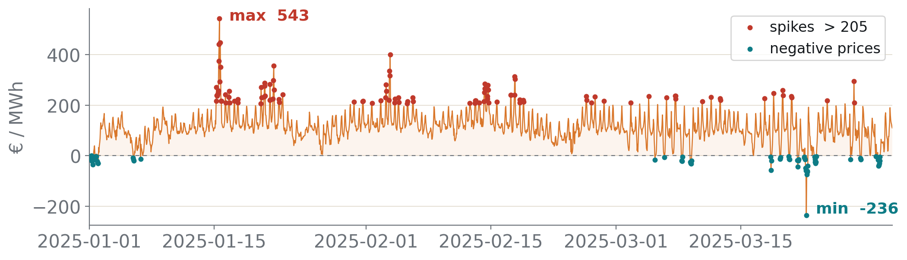
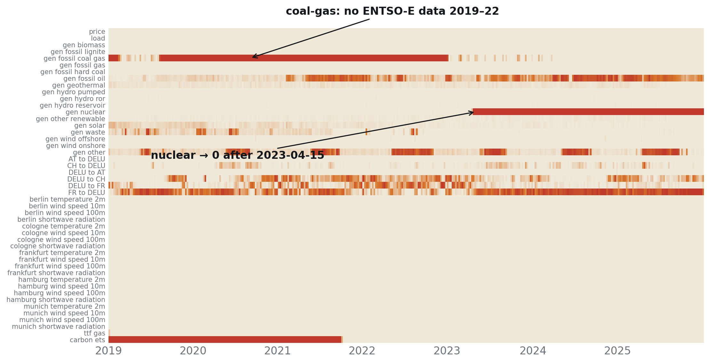
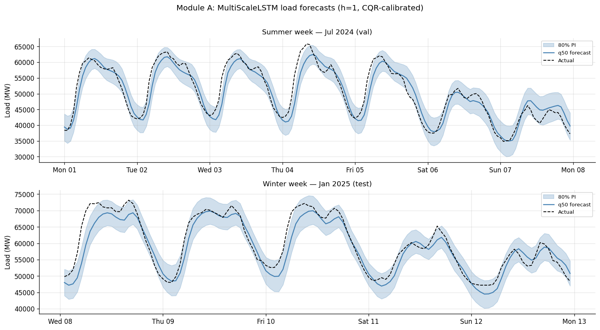

Forecasting & battery dispatch under uncertainty in the German–Luxembourg day-ahead electricity market.

Renewables, weather and geopolitics have made the market unstable: it no longer behaves the way it used to, so a single predicted number is fragile.
Each stage admits what it doesn't know, and that propagated uncertainty is what turns a battery into profit.
Two forecasters and one decision agent, each consuming the previous stage's quantiles.
Six messy external sources, repaired by a self-supervised deep imputer before any model sees them.
| Source | Signal | Endpoint / note |
|---|---|---|
| ENTSO-E | Day-ahead price (€/MWh) | A44 · market zone |
| ENTSO-E | Actual load (MW) | A65 · physical zone |
| ENTSO-E | Generation · 17 fuels (MW) | A75 |
| ENTSO-E | Cross-border flows · FR/AT/CH | A11 |
| Open-Meteo | Weather · 5 German cities | temp · wind · radiation |
| Yahoo / Energy-Charts | TTF gas & EU-ETS carbon | daily fuel prices |

A transformer learns to reconstruct held-out cells; a smoother captures local trend. We blend them per feature. Where a series is unrecoverable, the weight collapses to zero, and observed values are never overwritten.
Of 47 columns, only 24 carry real gaps (generation, flows, fuels); price, load and weather are already complete.
+ 13 variables are structurally unrecoverable: no data exists (coal-gas 2019–22), real shutdowns (nuclear), or variance-collapse (cross-border flows). Out of scope by design; SSHB self-limits and leaves them untouched.
A multi-scale LSTM that emits the first calibrated quantile band of the pipeline.
Two time-scales capture the daily and weekly load rhythm; CQR then calibrates the band.

Per-quantile gradient boosting with conformal, finite-sample calibrated intervals.
We tried a deep LSTM, but on this repetitive, categorical-heavy data gradient boosting won: three independent boosters, one per quantile, then conformal calibration.
A risk-aware reinforcement-learning agent trading a battery on the propagated price band.
An agent observes the state, takes an action, and learns from the reward. We train two of them and compare them; they never interact.
What calibrated uncertainty, propagated end to end, is ultimately worth.
Calibrated quantiles, carried end to end, turn forecasts into dispatch profit.
Do you have any questions?
| Split | Period | Hours |
|---|---|---|
| train | 2019–2023 | 43,824 |
| val | 2024 | 8,784 |
| test | 2025 Q1 · locked | 2,160 |